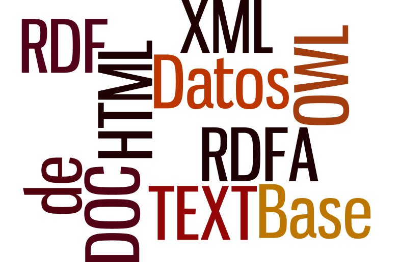
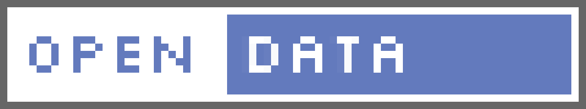
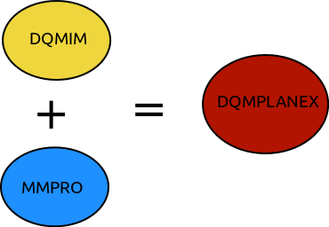
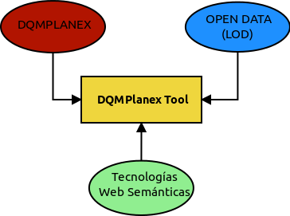

Universidad de Castilla-La Mancha
Escuela Superior de Informática
Ingeniería en Informática
Proyecto Fin de Carrera
DQMPlanex:Ejecución de Procesos de Medición de Calidad de Datos en Recursos Organizacionales
Rodrigo Testillano Tordesillas
Indice
- Introducción
- Objetivos
- Estado del Arte
- Metodología
- Resultados
- Trabajo Futuro
- Conclusiones
Introducción
Introducción
- Toda organización necesita datos
- Niveles indecuados de calidad de datos = Problemas
- Problemas económicos, técnicos y sociales
- Solución = Medir la calidad de los datos
Introducción
- Los datos tienen calidad si sirven para el propósito para el que se pretenede usar. (Idea de Fitness for use)
- Medir la Calidad de los Datos
- Carácter Multidimensional
- Carácter Subjetivo
- Naturaleza de los datos
Introducción
Introducción
Introducción
Introducción
Objetivos
Objetivos
- Objetivo Principal: DQMPlanex-Tool
Objetivos
- Objetivo Parciales:
- Interoperabilidad semántica
- Estudio tecnologías semánticas
- Almacenamiento de información semántica
- Desarrollo de un vocabulario u ontología para DQMPlanex-Tool
- Implementación de un razonador de reglas para datos semánticos
Objetivos
- Otros Objetivos:
- Multiplataforma
- Fácil de usar. Usabilidad
- Componente Social
Estado del Arte
Estado del Arte
Calidad de Datos
Definición de calidad según la RAE:Calidad: Propiedad o conjunto de propiedades inherentes a algo que permiten juzgar su valor
Estado del Arte
Calidad de Datos
- Dimensiones de Calidad de Datos
- Modelo de Calidad de Datos
Estado del Arte
Calidad de Datos
¿Cuando tienen calidad los datos?Los datos tienen calidad si sirven para el propósito (tarea) para el que se pretenen usar ( Fitness for Use [DEM86])
Estado del Arte
Calidad de Datos
¿Qué se necesita para madir?- Modelo de información de calidad de datos
- Metodología que defina un procedimiento para medir
Estado del Arte
Calidad de Datos
DQMIM- En [Cab04] se define un Modelo de información de medición de calidad de datos basado en el estándar ISO/IEC 15939
- Objetivo: Proponer una nomenclatura común para los proceos de medición de calidad de datos
Estado del Arte
Calidad de Datos
DQMIM- ¿Por qué medir?
- Satisfacer una Necesidad de información
- ¿Qué medir?
- Los Conceptos medibles
- ¿Dónde medir?
- En las entidades de datos
- ¿Quién debe medir?
- Los propietarios de los datos
Estado del Arte
Calidad de Datos
DQMIM- ¿De quién son las entidades a medir?
- De los propietarios de los datos
- ¿Cómo medir?
- Definiendo reglas de negocio
- ¿Cuántos datos medir?
- Depende de la cantidad
- ¿Cómo medir?
- Determinar el momento exacto
Works in Mobile Safari
Try it out! You can swipe through the slides and pinch your way to the overview.
Marvelous Unordered List
- No order here
- Or here
- Or here
- Or here
Fantastic Ordered List
- One is smaller than...
- Two is smaller than...
- Three!
Transition Styles
You can select from different transitions, like:
Cube -
Page -
Concave -
Zoom -
Linear -
Fade -
None -
Default
Themes
Reveal.js comes with a few themes built in:
Sky -
Beige -
Simple -
Serif -
Night -
Default
* Theme demos are loaded after the presentation which leads to flicker. In production you should load your theme in the <head> using a <link>.
Global State
Set data-state="something" on a slide and "something"
will be added as a class to the document element when the slide is open. This lets you
apply broader style changes, like switching the background.
"blackout"
"soothe"
Custom Events
Additionally custom events can be triggered on a per slide basis by binding to the data-state name.
Reveal.addEventListener( 'customevent', function() {
console.log( '"customevent" has fired' );
} );
Clever Quotes
These guys come in two forms, inline:
The nice thing about standards is that there are so many to choose from
and block:
For years there has been a theory that millions of monkeys typing at random on millions of typewriters would reproduce the entire works of Shakespeare. The Internet has proven this theory to be untrue.
Pretty Code
function linkify( selector ) {
if( supports3DTransforms ) {
var nodes = document.querySelectorAll( selector );
for( var i = 0, len = nodes.length; i < len; i++ ) {
var node = nodes[i];
if( !node.className ) ) {
node.className += ' roll';
}
};
}
}
Courtesy of highlight.js.
Intergalactic Interconnections
You can link between slides internally, like this.
Fragmented Views
Hit the next arrow...
... to step through ...
any type- of view
- fragments
Fragment Styles
There's a few styles of fragments, like:
grow
shrink
roll-in
fade-out
highlight-red
highlight-green
highlight-blue
Spectacular image!

Export to PDF
Presentations can be exported to PDF, below is an example that's been uploaded to SlideShare.
Take a Moment
Press b or period on your keyboard to enter the 'paused' mode. This mode is helpful when you want to take distracting slides off the screen during a presentation.
Stellar Links
It's free
reveal.js and rvl.io are entirely free but if you'd like to support the projects you can donate below. Donations will go towards hosting and domain costs.